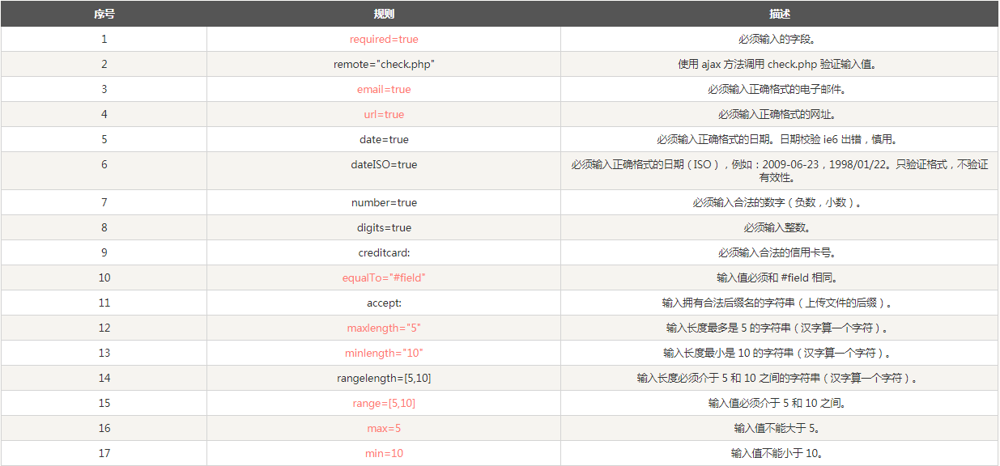
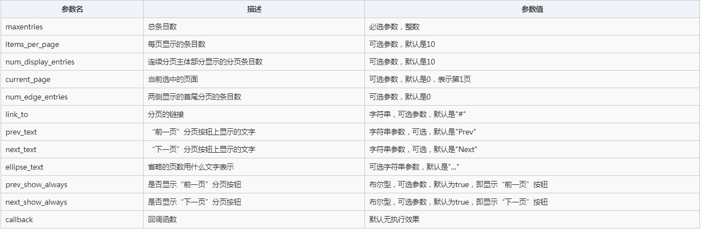

学习以及面试过程中，都会着重原生的东西，但实际开发过程中，很少会用原生写项目，一线城市就是vue、react、以及Angular 的使用比较多，jQuery也有，但相对二线城市来说会少一些，但也不是没有。
以前的jQuery就是王者，现在jQuery是入门。以前可能需要花很大的精力去学习jQuery，现在知道怎么用即可。
市面上有很多基于jQuery的插件，比如轮播图，分页，cookie等插件，这边推荐一个很好用的网站：http://www.jq22.com，里面有很多插件，很多都是连布局，样式都写好的，直接拿就可以了。但有时找不到自己心中想要的那个，或者说功能上跟自己的需求相差一些，就需要自己动手写一个了。不仅要会用插件，还要会写插件。
表单验证插件的使用：$('选择器').validate()
插件的使用规则
cookie插件的使用：
分页插件的使用：$("#pagination").pagination();
参数表：
别人的插件有时候确实很好用，但也有用不顺手的时候，这时候就需要自己动手啦！
下面的代码是我封装的一个轮播图的插件，简易版！
; (function ($) {
$.fn.extend({
fade(options) {
var obj = {
imgs: options.imgs,
prev: options.prev,
next: options.next,
points: options.points,
autoplay: options.autoplay === false ? false : true,
delay: options.delay || 3000,
current: options.current || 0,
duration: options.duration || 500,
len: options.imgs.length
};
obj.next.on('click', function () {
obj.current++;
if (obj.current === obj.len) {
obj.current = 0;
}
ani(obj.current);
});
obj.prev.on('click', function () {
obj.current--;
if (obj.current === -1) {
obj.current = obj.len - 1;
}
ani(obj.current);
});
for (var i = 0; i < obj.len; i++) {
obj.points.append('<span></span>');
}
ani(obj.current);
obj.points.find('span').on('mouseenter', function () {
var index = $(this).index();
obj.current = index;
ani(obj.current);
});
var timer = null;
if (obj.autoplay) {
timer = setInterval(function () {
obj.next.click();
}, obj.delay);
}
if (obj.autoplay) {
$(this).hover(function () {
clearInterval(timer);
}, function () {
timer = setInterval(function () {
obj.next.click();
}, obj.delay);
})
}
function ani(current) {
obj.points.find('span').eq(current).addClass('active').siblings().removeClass('active');
obj.imgs.eq(current).stop().fadeIn(obj.duration).siblings().stop().fadeOut(obj.duration);
}
}
});
})(jQuery)
如有问题，欢迎评论哦！